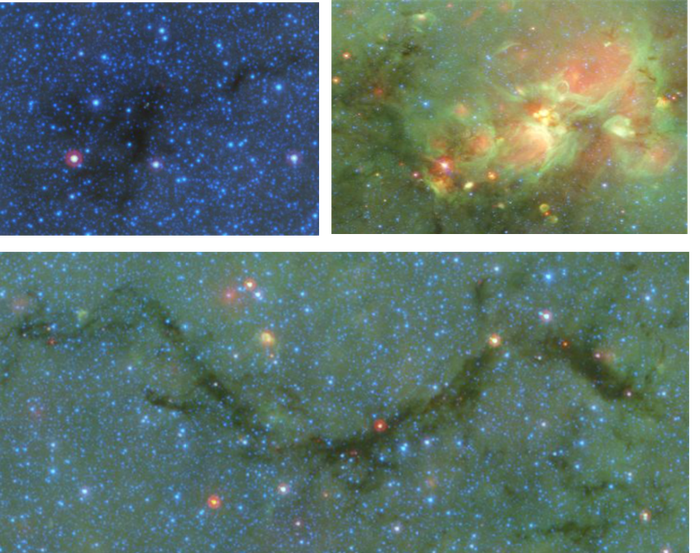

![]()
Based on (Abreu-Vicente et al. 2015). Versi√≥n del post en espa√±ol üá™üá∏
The relationship between star formation and density in molecular clouds
Stars are born in the coldest and densest regions of molecular clouds, which are in turn the predominant structure filling the space between stars (the interstellar medium). This is an empirical fact, confirmed by numerous studies extending over decades-long research.
Molecular clouds produce stars which, in turn, modify the material they were created from to send it back into the interstellar medium, thus forming new stars by recycling the dead-stellar material. For this reason, molecular clouds play a crucial role in galactic evolution. Consequently, the study of the evolution of molecular clouds is of great interest to the scientific community.
Not only are stars formed from recycled material of previous generations. With the only possible exception of some of our building Hydrogen atoms, all the atoms of all the matter you see on Earth (including you and me) have at some point in the history of the Universe been inside a star. Later, this tiny wanderers found themselves in the vast Cosmic void, at temperatures below 200 degrees Celsius in the molecular cloud where our Sun was formed.
The internal structure of molecular clouds can be used to infer the physical processes acting upon them (Hennebelle y Falgarone 2012). Observations show that molecular clouds consist of a series of dense cores, usually wrapped in filamentary structures of slightly lower density Jorge Abreu-Vicente (2023). The cores and filaments are surrounded by a more diffuse (less dense) material that dominates the large scale extension of molecular clouds. The cores are the sites where star formation occurs. They are about half a light-year in size, with masses ranging from 0.1 to 1000 times that of the Sun and temperatures around -250 to -260 degrees Celsius.
Why do we need a systematic study of molecular clouds in the Galactic plane?
The main differences between these cores, filaments, and diffuse material are their densities (higher in cores and lower in diffuse areas) and their temperatures, which inversely increase with decreasing density. The density distribution of these elements and of molecular clouds as a whole can therefore be used to study the physical processes acting on them, as well as their relative importance. In the work presented in this post, we conduct the first systematic study of density distributions in molecular clouds across the Milky Way.
Prior to this work, only the density distributions of molecular clouds in the solar neighborhood (a circle about 3000 light-years in diameter with the Sun at its center) had been thoroughly studied Kainulainen y Tan (2013). The reasons are mainly technical limitations in the methods of measuring density (for more details, Abreu-Vicente et al. 2015). The problem with molecular clouds in the solar neighborhood is that they are not representative of the molecular clouds typically found in the Milky Way. Consequently, the findings of Solar Neighborhood molecular clouds can’t be accepted as generic results without further extended studies. For context, the molecular clouds in our vicinity form very few stars, mainly of low mass, and have masses of about 1000 times that of the Sun. The average molecular cloud in our Galaxy has high star-forming activity of both, low- and high-mass stars, and they have masses between 10^5 and 10^6 solar masses.
Hence, in this work we aim to obtain the first systematic study of the relationship between density distribution and star formation in molecular clouds at Galactic scales. In this way, we could finally extrapolate the results to a more general scenario. With these results, we will be able to test the current theoretical paradigms about the processes that trigger star formation. The most specific scenarios are: gravity, turbulence, and to a lesser extent, magnetic fields.
We note that other scenarios, such as star-formation activity triggered by compression of nearby massive stars and supernova explosions, have been also suggested. However, our work is not intended to share light in these two processes.
Previous works show that the density distribution in molecular clouds with and without star formation activity are fundamentally different Schneider et al. (2013). Molecular clouds with star formation show higher amounts of material concentrated in dense areas. This can be seen in Figura 1. Clouds without active star formation (quiescent, in the left panel) have a density distribution in the form of a log-normal function, while active clouds, like Taurus in the right panel, show a clear excess of material above the log-normal line (solid) in the right side of the graph representing dense regions.
The interesting aspect of these results lies in the analytical form of the functions. Theoretical simulations show that a molecular cloud in which gas turbulence is the main physical process evolves in such a way that its density distribution follows a log-normal function Lombardi, Alves, y Lada (2015). Conversely, molecular clouds dominated by gravity have an exponential distribution, similar to the “straight line” shown by Taurus at high densities. These results suggest that, at least in clouds in the Solar Neighborhood: turbulence dominates the evolution of molecular clouds without star formation, while gravity is the dominant process in clouds with star formation.
Observing molecular clouds in different evolutionary stages reveals the dominant Physical processes in action
In this work, we define three types of molecular clouds based on their star formation activity: quiescent clouds (without star formation), star-forming clouds, and HII regions. The latter are clouds in which star formation has taken place during the last few million years. In these, the new stars, through their ultraviolet radiation, have ionized and completely reshaped their parent clouds. Quiescent clouds reveal themselves as dark patches against the NIR background emission of the Galactic plane. Star-forming clouds are a mix between the other two evolutionary stages, appearing as dark patches with small bright NIR spots. Examples of the three stages are shown in Figura 2.
It is important to note that the choice of molecular cloud types in this work is justified by their logical (although not observationally confirmed, as it would require at least a million years of waiting) evolutionary sequence: clouds are first in a quiescent state, then begin to form stars, until massive stars form and with their early-stage radiation dissolve the molecular cloud. The article discusses in depth the possible explanations and exceptions to this evolutionary sequence.

The results of our work show that Galactic molecular clouds exhibit a density distribution similar to those in the solar neighborhood, depending on their star formation activity. Quiescent clouds follow a log-normal function. Star-forming clouds show an excess of gas in dense regions compared to the log-normal. Finally, HII regions are dominated almost entirely by an exponential component.
Following this result, the question that came to mind was the following: Let’s assume that our three types of clouds show a sequential evolutionary process. In other words, every molecular cloud will evolve from quiescent to HII1, passing through the intermediate state. And the results show a gradual increase in dense gas in this sequence. Could we use the amount of dense gas in a molecular cloud to determine its age based on its density distribution?
And the answer turned out to be yes. Simulations show that in a gravity-dominated cloud, the point at which its density distribution deviates from the log-normal function is directly related to the age of the cloud (Girichidis et al. 2014). Or at least the age since gravity began to dominate certain regions of the cloud. After rigorous calculations, we concluded that the average age of our quiescent clouds is about 10^5 years, star-forming clouds have an average age of half a million years, and HII regions would have an average age of about 2 million years. These values are remarkably similar to estimates made with completely independent methods for the ages of star-forming cores, protostars, and massive stars, which are the main elements of our three regions. Therefore, we suggest that there is a relationship between star formation, density distribution, and the evolution of molecular clouds, and that this is seen in clouds scattered throughout the Galactic plane.
Our work suggests the following theoretical framework for the evolution of molecular clouds and star formation: in their first 10^5 years, molecular clouds are in a state dominated by turbulence. At a certain point, turbulence will generate areas of gas with higher density than their surroundings. These regions will become self-gravitating and begin the collapse towards star formation, while the rest of the cloud continues in a state dominated by turbulence. This process will continue and gradually more and more self-gravitating areas will be generated. Eventually, massive stars will be formed that will eventually dissolve their parent cloud with their strong UV radiation. We see that turbulence and gravity take turns during the life of a molecular cloud. However, it is ultimately gravity that causes star formation.
The radiation pressure by massive stars in HII regions might be a non-neglectable contributor to the star formation in the later stage. However, we can not put it into numbers with the techniques used in the present study. This gap should be filled in future studies.
Referencias
Notas
Low mass star-forming clouds such as those in the Solar Neighborhood might never have stars massive enough to generate HII regions.↩︎
Cómo citar
@online{jorge abreu-vicente2023,
author = {Jorge Abreu-Vicente, Dr.},
title = {Deciphering the evolutionary journey of molecular clouds},
date = {2023-10-31},
url = {https://drAbreu.github.io/web/en/posts/2023-10-31-revealing-star-forming-trigger/},
langid = {es}
}